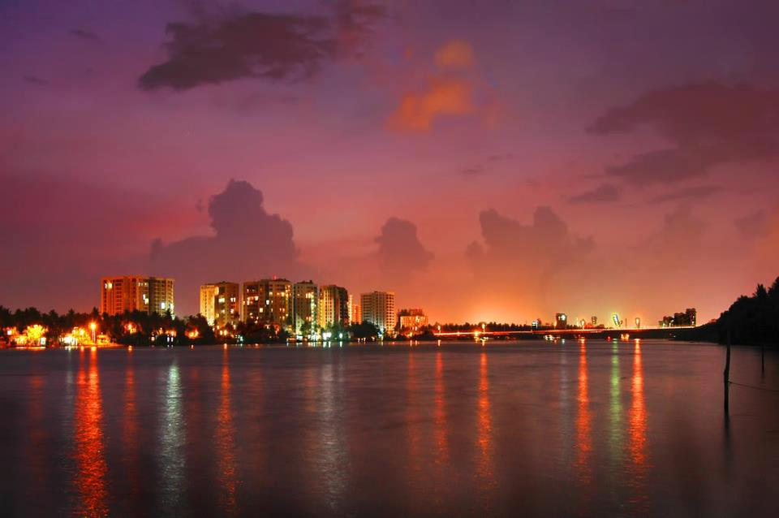

Ernakulam is the central district in Kerala and is home to its financial and industrial capital, Kochi. The district is considered as the economic and political hub of Kerala. The Cochin Stock Exchange, Kerala Municipal Corporation and Kerala High Court also fall within this district. While it is the most industrial area in Kerala, it also boasts of wonderful tourist attractions that connect man to nature and God. Keeping a strong balance between nature, faith and industry, Ernakulam remains the heart of Kerala.
Kochi is not only scenic but it has a rich cultural heritage, which is evident from the historic palaces and museums. Importance of Kochi can be gauged by the fact that it is considered the Gateway to Kerala.
Cherai beach is located near Vypeen Island and it ranks amongst the best beaches in the whole of Kerala. This is a great place for swimming as it is clean and shallow. Famously called the ‘Princess of the Arabian Sea’, the beach has a stunning landscape. The backwaters of the beach are scenic. The dense coconut trees and Chinese fishing nets are enchanting.
Fort Kochi is a small town in Kochi. Fort Kochi has a rich cultural heritage and the buildings here reflect the past of the town. Fort Kochi was granted by the king of Kochi to the Portuguese in the year 1503 as a mark of gratitude for the help received while fighting Saamoothiri, Kozhikode. Influences of Portuguese, Dutch and the British style of architecture can be seen in the constructions in Fort Kochi. Some of the important places in Fort Kochi include Fort Emmanuel, Thakur House, David Hall, St. Francis Church and Vasco-da Gama square.
The man-made Willingdon Island connects Kochi with seaports the world over. The island named in memory of Lord Willingdon was created in the year 1936. It houses Port of Cochin, Customs offices and few other offices and business centers. Some of the best hotels in the city are found here.